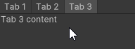
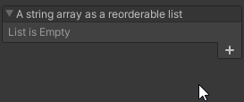
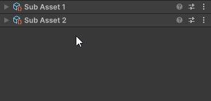
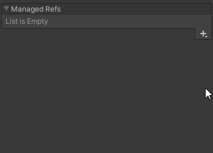

UITK Editor Aid
This package contains UI Toolkit elements and utilities for custom Editor interfaces in Unity.
How to install
See Install a package from a Git URL to install with
the Package Manager. The git URL for this package is https://github.com/OscarAbraham/UITKEditorAid.git.
You can also download this package into your Assets folder.
Brief rundown of this package
Visit the package's API documentation for more information. Click a name to go to the relevant documentation page for usage info and some code examples:
EditableLabel
A label that transforms into a field for editing its text. It becomes editable with a double click by default.
TabbedView
A UI Toolkit element for organizing content with tabs. It has the option to support opening multiple tabs at the same time by holding shift or ctrl (or cmd in macOS) while clicking a tab. It also supports remembering the last opened tabs by assigning a unique string as a persistence key.

ArrayPropertyField
A UITK control for a serialized Array or List. It has many customization options.

ListOfInspectors
A list of Objects similar to the components list in a GameObject's inspector. This element is typically used with a list of subassets.

PropertyContainer
Element that shows a SerializedProperty's prefab override indicators, and the property's context menu. Currently, Unity only shows these things for some specific fields under specific circumstances. This element makes those features available everywhere.
ManagedReferenceField
Supports SerializeReference before 2022.2. Unity 2022.2 adds support for Managed References in UITK, but this element can still be useful there to go around some bugs (for example, UITK doesn't like when two classes contain fields with the same name but different type).

BindingStopper
Element that prevents binding its children from higher in the hierarchy. Use this element to keep fields bound to different Objects than the rest of the UI.
Disabler
Element that disables its content according to a callback. It's analogous to IMGUI's DisabledScope.
FixedSpace and FlexibleSpace
Elements for quickly adding a space along their parent's flex direction. They're analogous to IMGUI's Space and FlexibleSpace.
DragAndClickManipulator
A Manipulator that handles treating a click as a drag when the mouse is dragged, and as a click when the mouse is clicked without moving it. It's useful for things that can be both clicked and dragged, like the headers of Components in the inspector.
SerializedObjectExtensions
Extension methods for SerializedObject that are specially useful in combination with UI Toolkit. It contains an IsEditable method that can be used in combination with the Disabler element to avoid editing objects that shouldn't be edited
UIToolkitExtensions
Contains many extension methods for VisualElements. It has methods to manipulate only the direct children of an Element, some other methods for quickly setting multiple style properties in one go, and a method for getting the SerializedProperty that is bound to a field, among other things.
IMPORTANT: Embedding this package
If you are going to include this package inside another package or Asset Store plugin, please follow these steps to avoid collisions in projects that use this package by themselves.